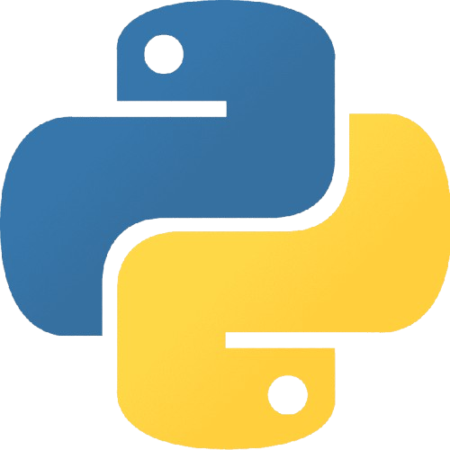
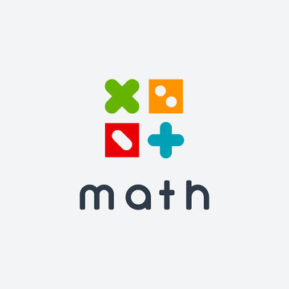

 Python et Pokémon
Le projet "Python et Pokémon" est un jeu développé en Python qui simule un combat de Pokémon. Voici une explication du code :
- Joueur : Cette classe représente un joueur dans le jeu. Elle contient des méthodes pour choisir des Pokémon, ajouter des Pokémon à l'équipe, choisir une attaque, récupérer un Pokémon spécifique, et afficher les informations du joueur et de ses Pokémon.
- Pokemon : Cette classe représente un Pokémon. Elle contient des attributs pour les caractéristiques du Pokémon (nom, prix, type, points de vie, niveau, attaques, etc.) et des méthodes pour ajouter une attaque, attaquer un autre Pokémon, vérifier si le Pokémon est KO, et afficher les informations du Pokémon.
- Attaque : Cette classe représente une attaque que peut utiliser un Pokémon. Elle contient des attributs pour les caractéristiques de l'attaque (nom, type, catégorie, précision, puissance, PP) et une méthode pour calculer les dégâts infligés à un autre Pokémon.
- Jeu : Cette classe représente le jeu lui-même. Elle initialise les listes de Pokémon disponibles pour chaque joueur et contient une méthode pour gérer le déroulement du jeu, y compris la sélection des Pokémon par les joueurs, les combats entre les Pokémon, et la détermination du gagnant.
Le jeu permet aux joueurs de choisir leurs Pokémon, de les entraîner et de les faire combattre contre d'autres Pokémon. Chaque Pokémon a des statistiques uniques et des attaques spéciales, et les combats sont basés sur un système de tours.
 AFIT (Arithmetic for IT)
L'AFIT (Arithmetic for IT) est un projet réalisé lors de la première année à l'EPITA. Ce projet nous met au défi de développer des fonctions mathématiques plus ou moins complexes en utilisant le langage de programmation OCaml. Les objectifs du projet incluent :
- Écrire des algorithmes pour vérifier si un nombre est premier.
- Implémenter le théorème de Bézout, qui permet de trouver des coefficients pour une combinaison linéaire de deux nombres entiers.
- Réaliser des fonctions pour le calcul du PGCD (Plus Grand Commun Diviseur) et du PPCM (Plus Petit Commun Multiple).
- Développer des algorithmes pour la factorisation de nombres entiers.
Ce projet a pour but d'allier programmation et mathématiques complexes, en nous permettant à nous, aux étudiants, de renforcer nos compétences en algorithmique et en résolution de problèmes. En travaillant sur ce projet, on apprend à appliquer des concepts mathématiques à des problèmes concrets et à développer des solutions efficaces en OCaml.
Pokédex
Le projet "pokedex-proj" est une application web dédiée à l'univers des Pokémon. Elle offre aux utilisateurs une interface conviviale pour consulter des informations détaillées sur chaque Pokémon disponible. L'application est développée en utilisant des technologies web modernes (avec le framework vuejs), garantissant une expérience utilisateur fluide et interactive. Elle permet aux fans de Pokémon d'explorer et de découvrir des données précises sur leurs créatures préférées, facilitant ainsi la compréhension et l'apprentissage de l'univers Pokémon.